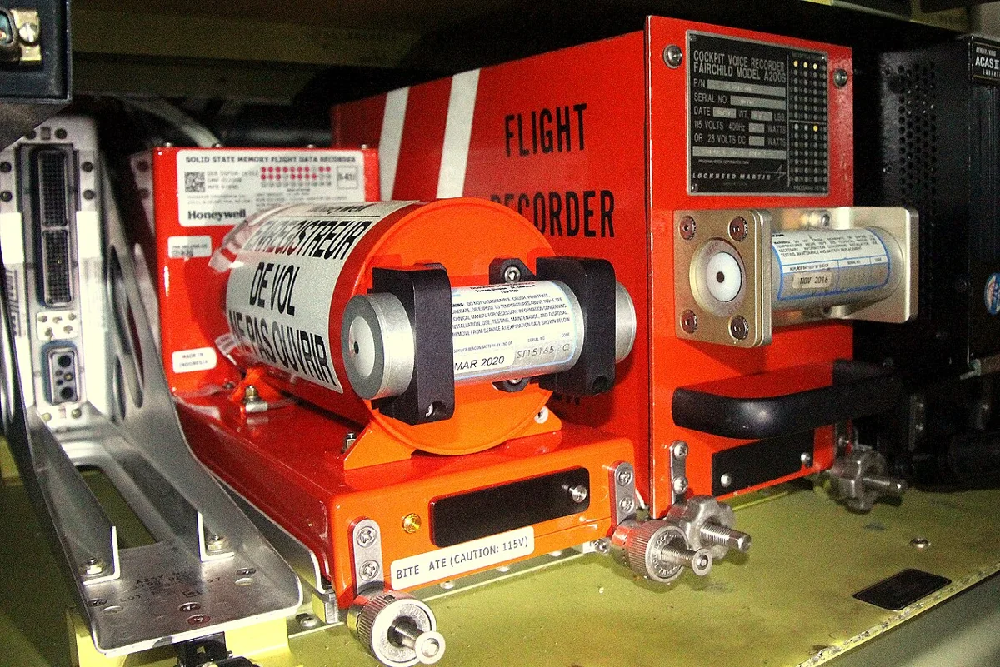
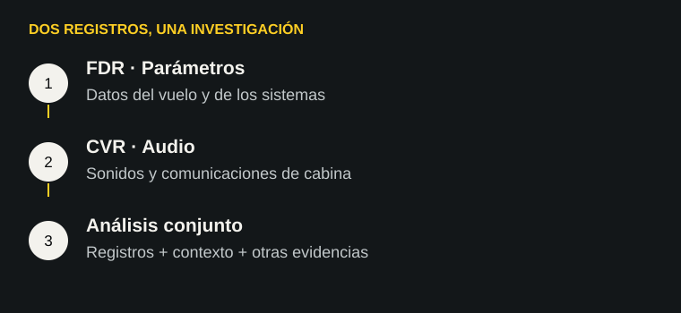

02 / Investigación y evidencia
Los registradores de vuelo
Qué registran el FDR y el CVR y cómo ayudan a aprender de los sucesos.


Los registradores de vuelo, conocidos como cajas negras, conservan información que permite reconstruir lo ocurrido durante una operación. Su función principal es aportar evidencia: no evitan por sí mismos una falla ni explican automáticamente todas sus causas. Su contribución a la seguridad aparece cuando los datos se interpretan junto con otras evidencias y se transforman en acciones preventivas (National Transportation Safety Board [NTSB], s. f.-a).
Funciones del FDR y del CVR
El registrador de datos de vuelo o FDR almacena parámetros como altitud, velocidad y rumbo. El registrador de voz de cabina o CVR recoge comunicaciones y sonidos de la cabina de mando. Sus registros son complementarios: unos permiten analizar la evolución de la aeronave y los otros ayudan a contextualizar comunicaciones, alertas y actuaciones de la tripulación. La NTSB (s. f.-a) indica que suelen instalarse en zonas con mayor posibilidad de supervivencia, generalmente hacia la cola.
La duración del registro, los parámetros disponibles y las características del equipo dependen de su generación y de los requisitos aplicables. Por ello, una investigación debe comprobar qué equipos llevaba la aeronave en lugar de atribuir las mismas capacidades a toda la flota. Esta precaución evita confundir una especificación de referencia con una condición universal.
Walker (2017) analiza el paso desde el uso de los registradores después de un accidente hacia el monitoreo de datos de vuelo o FDM. Su argumento es que aprender de la operación no requiere esperar siempre a un suceso grave: el análisis de datos puede apoyar la identificación de señales precursoras. Esta distinción amplía el valor preventivo de la información, pero no significa que el CVR, el FDR y un programa de FDM sean el mismo sistema. Como interpretación del equipo, disponer de datos solo es útil cuando existen criterios para analizarlos y convertir los hallazgos en mejoras verificables.
Protección y recuperación de la información
Los equipos se identifican mediante colores visibles y protegen su memoria contra condiciones severas. La Australian Transport Safety Bureau [ATSB] (s. f.) describe ensayos de resistencia que incluyen una desaceleración de 3 400 g durante 6.5 milisegundos y exposición a fuego de 1 100 °C durante 60 minutos. Estas cifras corresponden a pruebas definidas; no significan que los dispositivos sean indestructibles ante cualquier accidente.
La baliza submarina emite una señal acústica al sumergirse para facilitar la localización. No es equivalente a un localizador satelital y su utilidad depende de las condiciones de búsqueda. Recuperar la unidad, leer sus datos e interpretarlos son etapas diferentes; una demora en cualquiera de ellas limita la rapidez de la investigación (ATSB, s. f.).
GADSS y nuevas posibilidades de recuperación
La Organización de Aviación Civil Internacional [OACI] (s. f.) describe el Sistema Mundial de Socorro y Seguridad Aeronáuticos, GADSS, como un conjunto de funciones de seguimiento, localización en emergencia, recuperación de datos y apoyo a búsqueda y salvamento. No debe confundirse el envío de posiciones con la transmisión del contenido completo de los registradores.
La OACI plantea diferentes medios para obtener oportunamente los datos, entre ellos registradores desplegables y transmisión por enlace satelital. Son alternativas técnicas sujetas a los requisitos aplicables y a su implementación; no prueban que todos los aviones comerciales transmitan continuamente todos sus datos. El análisis del equipo es que mejorar la localización ayuda a reducir incertidumbre, pero no sustituye la validación e interpretación de la evidencia.
Ética y protección de los registros
La European Union Aviation Safety Agency [EASA] (s. f.) explica que la investigación de seguridad busca prevenir accidentes y distingue este propósito de la determinación de responsabilidad civil o penal. También señala que la divulgación está regulada y que los registros de voz cuentan con protección. No es preciso afirmar una prohibición idéntica y absoluta para todos los usos y jurisdicciones.
En la comunicación académica se deben utilizar informes oficiales y evitar difundir grabaciones filtradas o atribuir culpas a partir de fragmentos. El valor de los registradores reside en su análisis contextualizado y en el aprendizaje preventivo, no en su explotación como material de entretenimiento.
Cómo interpretar los datos de una investigación
La interpretación exige ordenar la información disponible y preguntar qué puede demostrar cada registro. Una variación de altitud, por ejemplo, describe una parte de la trayectoria, pero no explica por sí sola por qué ocurrió. Una comunicación aporta contexto, aunque también puede ser incompleta si se estudia aislada de las condiciones operacionales. Como propuesta de lectura del equipo, conviene separar el dato observado de la hipótesis que intenta explicarlo. Después se revisa si otras evidencias apoyan esa interpretación o si todavía existen preguntas abiertas. Esta distinción ayuda a comprender por qué las investigaciones requieren tiempo y por qué una grabación difundida sin contexto no equivale a un informe técnico.
Conclusión
La caja negra forma parte de un proceso de aprendizaje. Su utilidad depende de recuperar información, comprobar su calidad y relacionarla con otros elementos del suceso. Los artículos y documentos revisados permiten distinguir entre conservar datos, localizar una aeronave e interpretar lo ocurrido: son funciones conectadas, pero diferentes. Para la seguridad aérea, la conclusión del equipo es que la tecnología de registro debe acompañarse de capacidad de análisis y de protección de la información. En el blog, esta distinción permite presentar los hallazgos con precisión y evitar conclusiones apresuradas sobre las actuaciones de la tripulación. Antes de compartir una afirmación, el lector puede preguntarse si procede de un informe oficial o solamente de una interpretación de terceros.
Las citas de este artículo se desarrollan en la bibliografía completa.
Caja negra · Exploración interactiva
El interior que protege la evidencia
Toca el registrador para abrirlo. Después, selecciona un punto o una pieza para conocer su nombre y su función.
EXPLORA / REGISTRADOR DE VUELO
Por fuera naranja.
Por dentro, protección.
Ilustración conceptual del blog, basada en información de ATSB, Honeywell, Curtiss-Wright y AAIB. La distribución y los materiales varían según el modelo; la apertura se representa de forma esquemática.